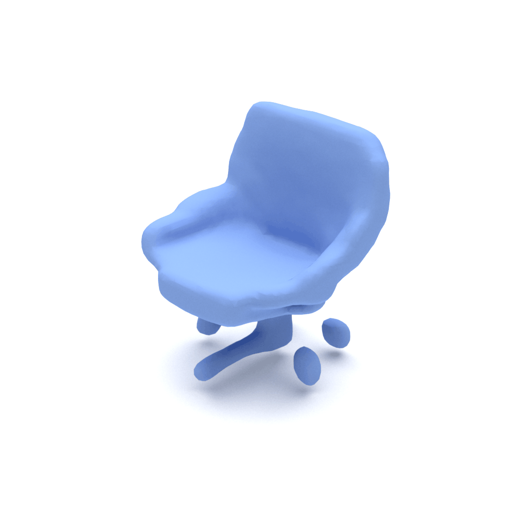
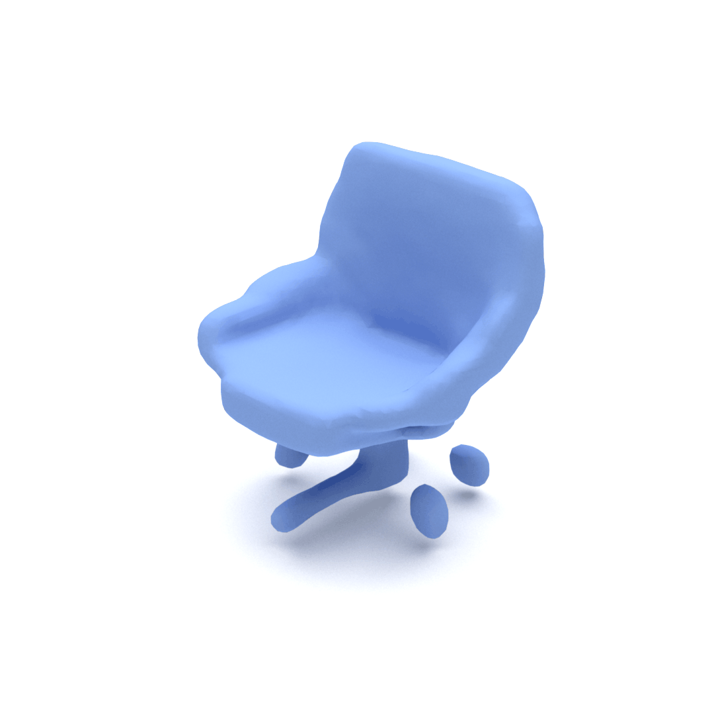
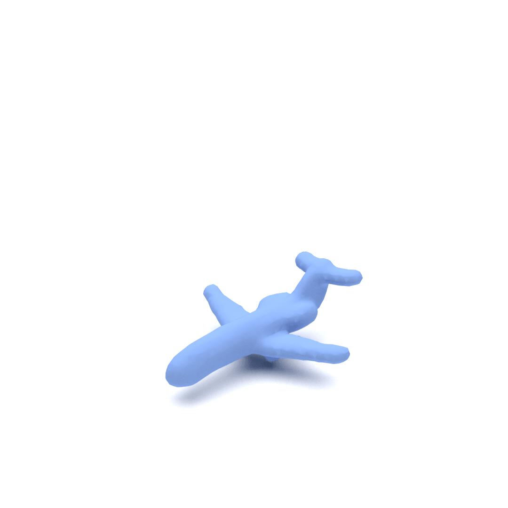
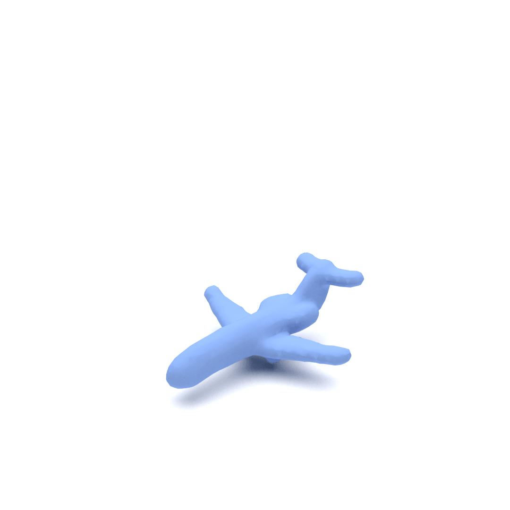
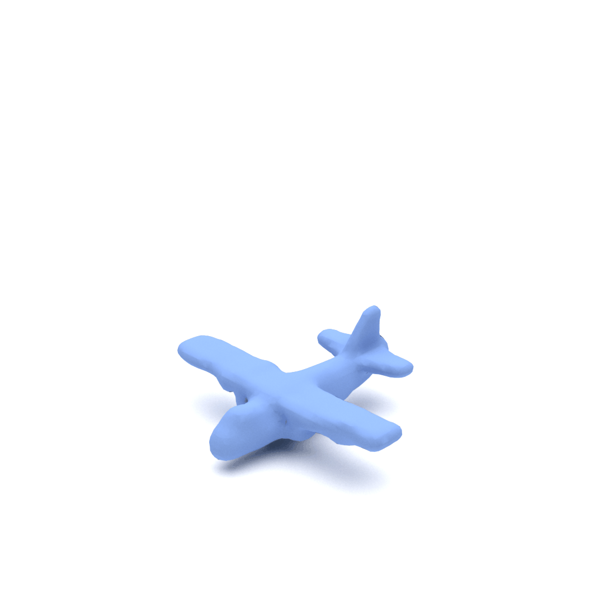
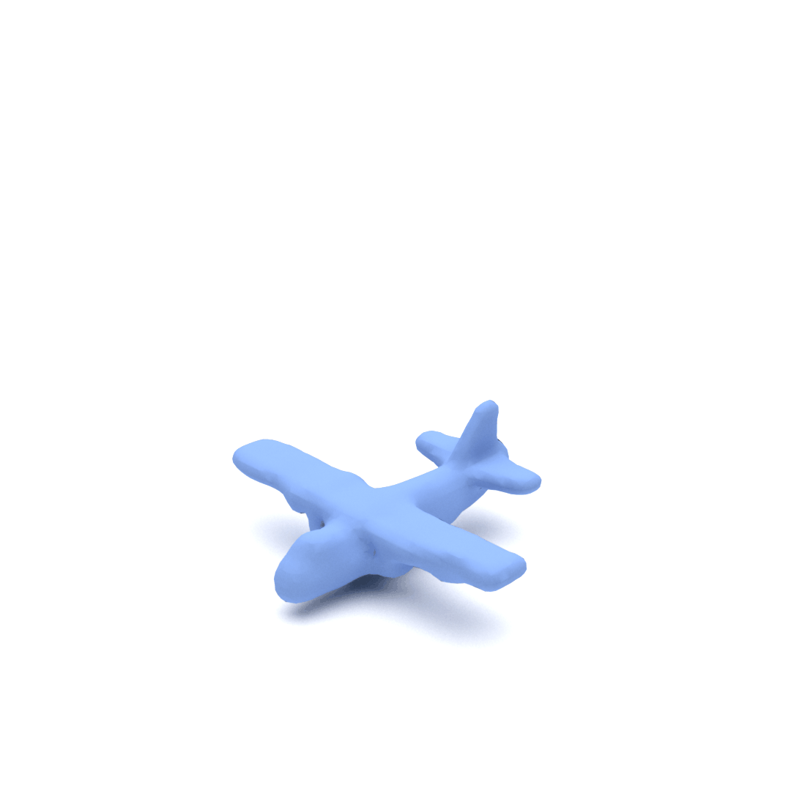

Abstract
We introduce GenPoly, a novel generalized 3D prior model specially designed for multiple 3D generation tasks, with a distinct focus on fine details preservation. Previous works often assemble discrete parts into complete shapes, inevitably leading to loss of details. We remedy this problem by explicitly capturing nuanced local geometric variations across multiple levels, enabling detail- preserved 3D shape generation. Specifically, we first introduce a polymorphic variational autoencoder (PolyVAE), which constructs a versatile shape residual codebook via a polymorphic quantization mechanism. This codebook strategically encodes multilevel intricate local geometry representations within the latent space. Building on these representations, a 3D polymorphic evolving scheme is further developed to progressively refine local details in a coarse-to-fine manner. In this way, visually compelling 3D shapes with rich and complex details can be ultimately generated. The effectiveness of our method is demonstrated through extensive qualitative and quantitative evaluations, where GenPoly consistently surpasses state-of-the-art methods across various downstream tasks, particularly in local detail preservation.
Method
Overview of the proposed PolyVAE framework. Starting with an input shape \( \mathcal{X} \) , the shape feature \( Z \) is extracted by a 3D encoder \( \mathit{E} \) and progressively quantized into polymorphic geometric representations. These representations are response for constructing a diverse polymorphic residual codebook \( \mathcal{C} \) through a tailored polymorphic quantization mechanism. The quantization mechanism consists of \( n \) branches, with the first branch quantizing the basic shape feature \( Z_1 \), while the subsequent branches extract polymorphic residuals from residual shapes \( \left\{Z_2, ... Z_n\right\} \). This approach captures refined multi-scale geometric features, supporting the generation of 3D shapes using rich multi-resolution geometric representations from the polymorphic residual codebook. Finally, the quantized features\( \{\hat{Z}_1, ... \hat{Z}_n\} \) are cascadedly aggregated and decoded into 3D shapes via a shared decoder \( \mathit{D} \), where the reconstruction loss is computed.
Unconditional 3D Shape Generation


 



 



 



Text-conditioned Generation
Given a text description, Our method can generate diverse and high quality shapes.
Single-view Shape Reconstruction
The results of single-view reconstruction.